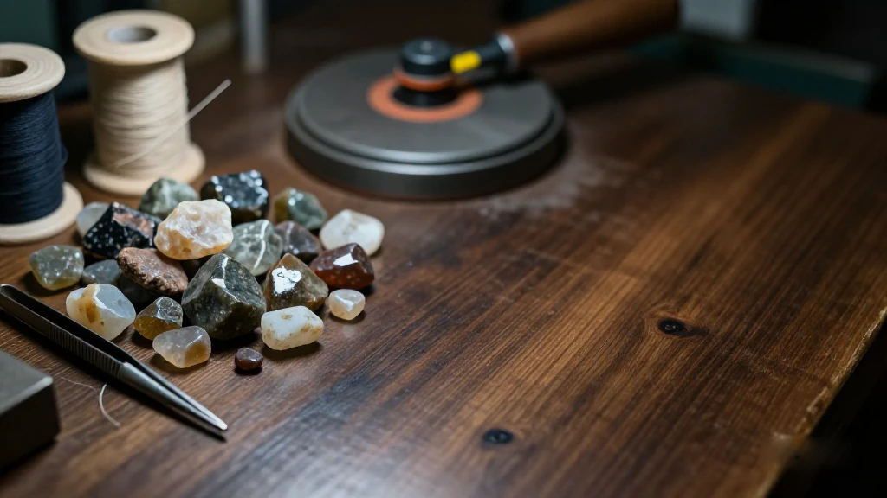
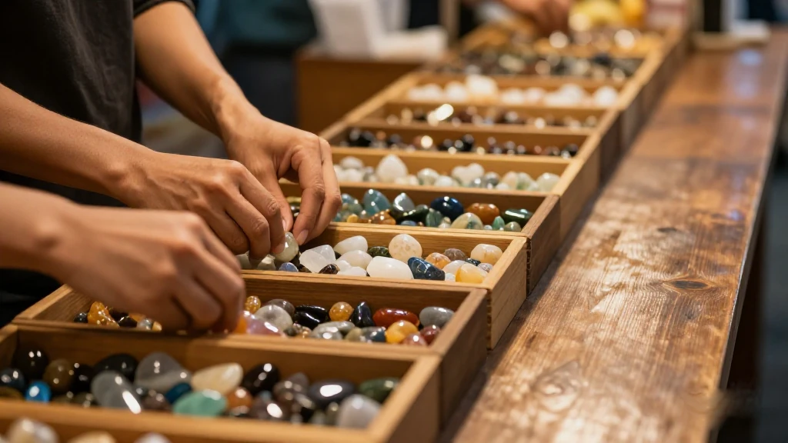
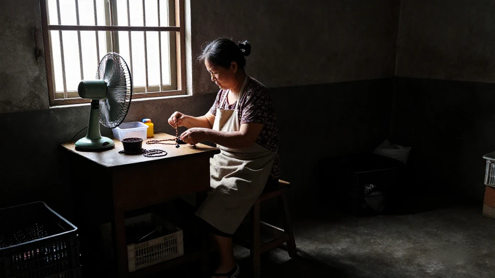
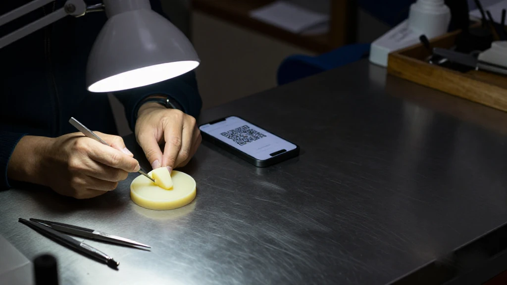
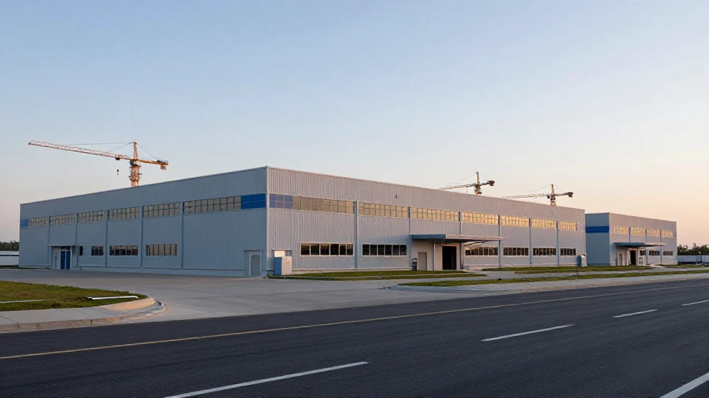
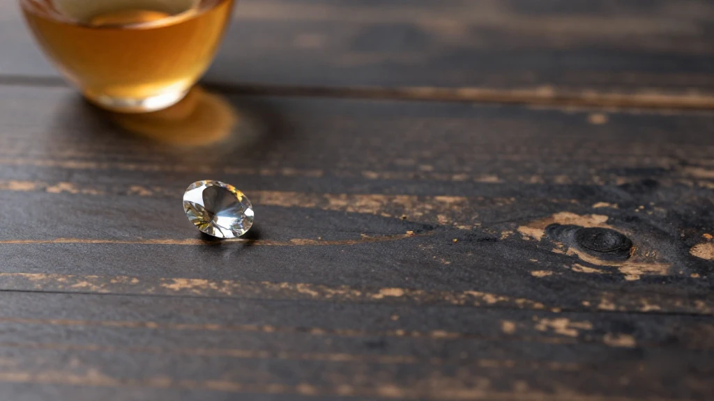

圖片由 AI輔助創作Image by AI
【鄭哥點評】欄目：鄭哥博客點評｜日期：2026-11-08
汕尾唔產一粒寶石。可塘鎮七萬幾人，周邊冇一個礦場，但全世界的彩色寶石，每兩顆就有一顆喺呢度過手；水晶珠串的加工量，佔全球七成以上。呢個唔係口號，係汕尾市政府自己寫在稿裡的數字。我由細聽到大。直到今年十一月一日，珠寶產業大會在梅隴開幕，發佈了國際彩寶貿易指數 GPI，又推出公共品牌「善美珠寶」——我才覺得，呢個做了四十年的世界工廠，開始想坐埋牌桌。

圖片由 AI輔助創作Image by AI
一、兩個鎮，兩雙手
汕尾的珠寶地圖，其實只有兩個鎮。可塘做彩寶：磨石、切粒、打孔、拋光；梅隴做首飾：熔金、起版、鑲嵌、電鍍。市政府叫「雙鎮鼎立、兩都並進」——一個「中國彩色寶石之都」，一個「中國首飾之都」。
規模係咁：全市年加工彩色寶石 5 萬噸、金銀首飾 9000 噸；水晶珠串加工量佔全球七成以上，金銀首飾加工量佔全國一半以上。2.1 萬家珠寶類市場主體、9.2 萬人就業、產業總規模突破 350 億元；日均發出電商快遞超過 2 萬單，年電商銷售額過百億，貨去 180 多個國家。
350 億元、9000 噸、180 個國家——數字看久了會暈。要記住的是另一件事：呢兩個鎮，本身一個礦都冇。石頭由巴西、南非、斯里蘭卡運來，飯碗係本地人自己練出來的。
來源：汕尾日報《2026汕尾珠寶產業大會11月1日於海豐梅隴啟幕》，2026-10-30｜https://www.shanwei.gov.cn/shanwei/zwgk/jcxx/zwdt/qxxwa/content/post_1307191.html

圖片由 AI輔助創作Image by AI
二、由一把鑷子開始
可塘的珠寶業，起點好低。20 世紀 80 年代初，國內黃金飾品市場放開，香港的珠寶廠要搵加工基地，第一代可塘人由最簡單的珍珠穿線做起。一位老珠寶人對《汕尾日報》講：「一把鑷子、幾條絲線，開啟了產業之路。」
80 年代末到 90 年代初，個體經濟放開，在深圳特區積累了技術、資本和市場經驗的可塘青年返鄉開家庭作坊。作坊很快擴到 40 多家。大廠在外接單，小廠協作生產；銷售走「可塘生產、廣州銷售」，兩頭在外。
2004 年，廣東可塘珠寶交易市場建成，產銷分離才算改過來。2015 年 8 月 11 日，省珠寶玉石首飾行業協會發文認定海豐為「中國彩色寶石之都」。今日這個七萬多人的小鎮，從業人員超過 4 萬，佔常住人口一半，外來人口又佔一半；市場主體 11600 多家，石料商行 230 多家，經手 30 多個國家的 120 多種原料；年均銷售額 50 億元。
一個不產一粒石頭的地方，把「買賣石頭」做成飯碗。靠的不是礦，是人肯返來。
來源：汕尾日報《解碼汕尾珠寶「璀璨傳奇」》，2025-11-01｜https://www.shanwei.gov.cn/shanwei/zwgk/jcxx/zwdt/rdgz/content/post_1198029.html

圖片由 AI輔助創作Image by AI
三、梅隴：由前店後廠到掃碼
梅隴遲少少，路數唔同。80 年代初，海豐籍旅港商人帶住技術和市場視野返鄉，用「前店後廠」點起火種——店在香港，廠在梅隴。幾十年下來，首飾加工由家庭作坊推到規模化，設計、熔金、起版、鑲嵌、打磨、拋光、電鍍、銷售一條鏈。
今日梅隴有首飾企業 3000 多家、從業 6 萬多人，金銀銅年加工量超 9000 噸，2025 年總產值預計超過 180 億元。生產端，3D 打印取代手工雕刻，幾個鐘頭出一個精度 0.1 毫米的蠟模，效率提升超過 35%。銷售端，2020 年起同電商平台合建直播基地，3000 多家網店一年做超過 50 億元交易額，200 多家企業經亞馬遜賣到 180 多個國家，其中迪霖珠寶年跨境出口超過 2000 萬美元。
廠裡那張二維碼最有趣。每件半成品貼一個，掃碼就睇得到由原料到質檢的全流程，合格率推到 99.5%。
不過，海豐縣的產業規劃書裡有一句更貼地：梅隴首飾加工的主要從業人員是農村家庭婦女，日常交通工具主要是摩托車，她們利用照顧家庭之外的零散時間做首飾。梅隴的首飾，好多唔係流水線上的工人做的，係阿嫂在煮飯與接細路之間做出來的。
來源：海豐縣融媒體中心《梅隴鎮以「數智」為筆 繪就「中國首飾之都」轉型新畫卷》，2025-10-21｜http://www.gdhf.gov.cn/gdhf/jjhf/zcdt/content/post_1194953.html

圖片由 AI輔助創作Image by AI
四、新園區，同 481 家未入園的作坊
11 月 1 日，2026 汕尾珠寶產業大會在梅隴珠寶首飾國際商貿城開幕，一場大會加八場平行活動。第二屆國際珠寶展設梅隴、可塘、長沙灣三大展區，3600 個展位，計劃吸引 3000 家企業。
第二日園區招商峰會更直接：6 家銀行合計授信 30 億元，8 家企業簽約進駐，東維亞珠寶產業園三、四期奠基。園區規劃八期，佔地約 400 畝、建築面積約 60 萬平方米、總投資 20 億元；建成後預計進駐 1500 家企業、帶動就業 3 萬人、年產值 50 億元。
另一邊，是規劃書裡不太上鏡的數字。2018 至 2022 年的整治規劃要求 662 家環評不齊全、環保設施未驗收的首飾企業搬遷入園。到 2025 年 5 月，其中 181 家已註銷或吊銷；剩下 481 家，大多仍留在梅隴三個保留工業片區，真正搬入的只有 3 家。
原因規劃書都寫得坦白：集聚區未建成，搬入去唔可以即刻開工；鼓勵搬遷的措施未落實；搬遷成本高；由梅隴去集聚區只有一條 324 國道，騎摩托車費時又危險。
來源：鳳凰網《30億元授信落地、8家企業簽約》，2026-11-03；另見海豐縣《珠寶首飾行業產業發展規劃（2025-2030年）》，2025-07-15｜https://shanwei.ifeng.com/c/8xkIcenAthq

圖片由 AI輔助創作Image by AI
五、鄭哥點評
四十年，汕尾將一塊石頭磨成一個產業。但要老實：七成、一半、350 億，全部係加工環節的數字，唔係利潤的數字。磨一粒石收幾多手工費，同賣一粒石收幾多品牌溢價，係兩條不同的曲線。GPI 落戶、品牌掛牌，本質係想由「定價的接受者」變成「定價的參與者」——呢一步比多建幾個園區難得多。
設計、鑑定、渠道，這三樣最肥的部分，仍然在深圳水貝、香港、廣州的手裡。汕尾出貨，人哋出名字。所以 3600 個展位、30 億授信，我只當係入場券。
至於那 481 家未入園的作坊，唔好一句「散亂污」就當佢們多餘。它們係成本優勢來源，也係幾萬個阿嫂的零散收入。一刀切關掉容易，關完啲人做咩？放任唔管，環保同安全又補唔上。呢個結，比品牌更難解。
一粒石頭磨四十年，磨出手藝、磨出飯碗，但仲未磨出一個簽名。下一個四十年，汕尾要磨的，唔再係石頭。
圖片由 AI輔助創作Image by AI
\[Zheng Ge's Take\] Column: Zheng Ge's blog commentary | Date: 2026-11-08
Shanwei mines not one gemstone. Ketan is a town of just over seventy thousand people with no mine anywhere near it, yet of every two coloured stones sold in the world, one passes through these hands; more than seventy per cent of the planet's crystal beads are finished here. That is not a slogan of the trade — it is a figure the Shanwei municipal government publishes itself. I grew up hearing it. Then on the first of November this year the jewellery industry conference opened in Meilong, released an international coloured-stone trade index called GPI, and put a public brand name, Shanmei Jewellery, on the whole trade. Only then did it feel as if this forty-year-old workshop of the world had started to ask for a seat at the table.
圖片由 AI輔助創作Image by AI
1. Two towns, two pairs of hands
Shanwei's jewellery map has, in truth, only two towns on it. Ketan in Haifeng county cuts and polishes coloured stones — grinding, slicing, drilling, buffing. Meilong in the same county makes jewellery — melting gold, carving the master model, setting stones, electroplating. The municipal government calls the arrangement two towns standing, two capitals advancing together: Ketan is the Capital of Chinese Coloured Gemstones, Meilong the Capital of Chinese Jewellery.
The scale, laid out: fifty thousand tonnes of coloured rough processed a year, nine thousand tonnes of gold and silver jewellery; more than seventy per cent of the world's crystal bead processing, more than half of China's gold and silver jewellery processing. Twenty-one thousand jewellery businesses, ninety-two thousand people employed, an industry worth more than thirty-five billion yuan. More than twenty thousand courier parcels leave every day, online sales pass ten billion yuan a year, and the goods reach more than one hundred and eighty countries.
Thirty-five billion yuan, nine thousand tonnes, one hundred and eighty countries — stare at the numbers long enough and they blur. Hold on to the other fact instead: neither town has a single mine. The stone arrives from Brazil, South Africa, Sri Lanka. The skill and the wages were made here.
Source: 汕尾日報《2026汕尾珠寶產業大會11月1日於海豐梅隴啟幕》，2026-10-30 | https://www.shanwei.gov.cn/shanwei/zwgk/jcxx/zwdt/qxxwa/content/post_1307191.html
圖片由 AI輔助創作Image by AI
2. It began with a pair of tweezers
Ketan's jewellery trade began very low. In the early 1980s the domestic gold market opened, Hong Kong factories went looking for processing bases, and the first generation of Ketan people started with the simplest thing there is: threading pearls. An old jeweller told the Shanwei Daily: a pair of tweezers, a few silk threads, and that was the road in.
In the late eighties and early nineties, as private business opened up, young Ketan men who had accumulated skill, capital and market sense in the Shenzhen special zone came home and opened family workshops. The workshops multiplied quickly to more than forty. Big factories took orders outside, small ones shared the production, and everyone leaned on everyone. Sales ran on made in Ketan, sold in Guangzhou — both ends outside the town.
In 2004 the Guangdong Ketan Jewellery Trading Market opened and finally joined production to selling. On 11 August 2015 the provincial jewellery and jade association formally recognised Haifeng as the Capital of Chinese Coloured Gemstones. Today this town of seventy-odd thousand has more than forty thousand jewellery workers — half the resident population, and half of those from elsewhere; more than 11,600 jewellery businesses, more than 230 rough-stone dealers handling over 120 kinds of material from more than thirty countries; three specialised trading markets with about 5,100 shop units; fifty thousand tonnes of coloured stone a year and annual sales of five billion yuan.
A place that produces not one stone has turned the buying and selling of stones into a livelihood. What it had was not a mine. It was people willing to come home.
Source: 汕尾日報《解碼汕尾珠寶「璀璨傳奇」》，2025-11-01 | https://www.shanwei.gov.cn/shanwei/zwgk/jcxx/zwdt/rdgz/content/post_1198029.html
圖片由 AI輔助創作Image by AI
3. Meilong: from shop-front workshop to a QR code
Meilong started a little later, by a different road. In the early eighties Haifeng-born merchants settled in Hong Kong brought back both the technique and the market view, and lit the fire with the shop in front, workshop behind model — the shop in Hong Kong, the workshop in Meilong. Over the decades the town pushed jewellery from family workshops into scale production, into a single chain: design, melting, master model, setting, grinding, polishing, plating, selling, .
Today Meilong has more than three thousand jewellery enterprises and more than sixty thousand workers; gold, silver and copper processing passes nine thousand tonnes a year; total output for 2025 is expected to exceed eighteen billion yuan. On the production side, 3D printing has replaced hand carving — a wax model accurate to 0.1 millimetres in a few hours, efficiency up more than thirty-five per cent. On the selling side, since 2020 the town has built livestream jewellery bases with the e-commerce platforms: more than three thousand online shops turning over five billion yuan a year, more than two hundred firms selling through Amazon and others into over one hundred and eighty countries, among them Guangdong Dilin Jewellery with cross-border exports above twenty million US dollars a year.
The most interesting thing in the factory is a QR code. Every semi-finished piece carries one; a customer scans it and sees the whole trail from raw material purchase through each production step to quality inspection. Transparent production has pushed the pass rate to 99.5 per cent.
And yet the county's own industrial plan puts it more plainly: most Meilong jewellery workers are rural housewives whose daily transport is a motorcycle, who put in jewellery work in the scattered hours left over from caring for a family. Much of Meilong's jewellery is not made by workers on a line. It is made by aunties, between cooking rice and collecting the children.
Source: 海豐縣融媒體中心《梅隴鎮以「數智」為筆 繪就「中國首飾之都」轉型新畫卷》，2025-10-21 | http://www.gdhf.gov.cn/gdhf/jjhf/zcdt/content/post_1194953.html
圖片由 AI輔助創作Image by AI
4. The new parks, and the 481 workshops still outside
On 1 November this year the 2026 Shanwei Jewellery Industry Conference opened at the Meilong International Jewellery Trade City — one conference and eight parallel events. The second Shanwei International Jewellery Fair runs three linked sites — Meilong, Ketan and Changsha Bay — with 3,600 booths and three thousand exhibitors expected.
The park investment summit the next day was blunter still: six banks extended a combined three billion yuan in credit, eight jewellery firms signed to move in, and phases three and four of the Dongweiya jewellery park broke ground. The park is planned in eight phases, about four hundred mu, some six hundred thousand square metres of floor space, two billion yuan of investment; when complete it expects 1,500 tenant firms, thirty thousand jobs and five billion yuan of annual output.
On the other side sits a set of numbers from the county plan that will never make a conference banner. The 2018-2022 remediation plan required 662 jewellery firms without complete environmental approvals or accepted pollution equipment to move into the parks. By May 2025, 181 of those 662 had been struck off or had their licences revoked; of the remaining 481, most are still in Meilong's three retained industrial zones. Exactly three have actually moved into the agglomeration park.
The plan even states why, without dressing it up: the park is not fully built, so a firm that moves in cannot start work at once; the promised incentives for relocating were never delivered; relocation is expensive — buildings, moving machinery, all of it money; and there is only one road, National Highway 324, from Meilong to the park, busy with traffic, slow and unsafe on a motorcycle.
Source: 鳳凰網《30億元授信落地、8家企業簽約》，2026-11-03；另見海豐縣《珠寶首飾行業產業發展規劃（2025-2030年）》，2025-07-15 | https://shanwei.ifeng.com/c/8xkIcenAthq
圖片由 AI輔助創作Image by AI
5. Zheng Ge's Take
Forty years on, Shanwei has ground a stone into an industry. But let us be honest: seventy per cent, half, thirty-five billion — every one of those is a processing figure, not a profit figure. What you earn for grinding a stone and what you earn for selling one under a name are two entirely different curves. Hosting GPI, hanging up the Shanmei brand, is at bottom an attempt to move from price-taker to price-participant — and that step is far harder than building another park.
Design, certification and channels — the three fattest parts — are still held in Shenzhen's Shuibei, in Hong Kong, in Guangzhou. Shanwei ships the goods; somebody else puts the name on them. So 3,600 booths and three billion yuan of credit are, to me, only a ticket in.
As for those 481 workshops outside the parks, do not write them off as scattered, messy, polluted and leave it there. They are where the cost advantage comes from, and they are the scattered income of tens of thousands of aunties. Shutting them down in one stroke is easy — but what do those people do the following week? Let them all be, and the environment and safety never get fixed. That knot is harder to untie than the brand.
A stone ground for forty years has produced skill and produced wages, but it has not yet produced a signature. In the next forty years, what Shanwei has to grind is no longer the stone.